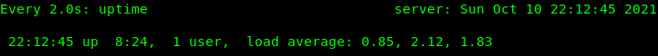

What You'll Learn
In this codelab you will learn
- how to get information about the CPU (Central Processing Unit).
- how to monitor CPU with Linux tools.
- how to perform a test run.
Where You Can Look Up
The command man is a short term for manual page and acts as an interface to view the reference manual of a command.
Syntax of man:
man [option(s)] keyword(s)
For example, if you want top find out more about the command ps and how to use it, just open a shell and type:
man ps
This command will display all the information about ps.
PS(1) User Commands PS(1)
NAME
ps - report a snapshot of the current processes.
SYNOPSIS
ps [options]
DESCRIPTION
ps displays information about a selection of the active processes. If
you want a repetitive update of the selection and the displayed
information, use top(1) instead.
--More--
What You'll need
Guest operation system (Guest OS)
This is the OS of the virtual machine. This will be Debian.
Administators privileges
By default, administrator privileges are required on the Host OS to install additional software. Make sure that you have the required permissions.
For the Guest OS, you will create and manage your own users. These users will therefore be different from the Host's user administration.
What You will learn:
You can use one of the following commands to find detailed information about the physical CPUs (pCPU) including all cores on Linux:
- nproc command
- lscpu command
- cat /proc/cpuinfo
- hwinfo command
- dmidecode command
- getconf command
- cpuid command
Description
The nproc command displays the number of available processing units. The command is a built-in command in a Linux system.
Sample code
Open a shell and run nproc with the following option:
echo "Threads/core: $(nproc --all)"
Sample output
The output may look like this:
Threads/core: 4
References
Need help or list of parameters? Use this:
man nproc
Description
On most Linux distributions, you can also use the lscpu command. It displays not only the number of processors but also the architecture, model name, speed, and much more.
Sample code
Open a shell and run the following command:
lscpu
Sample output
The output may look like this:
Architecture: x86_64
CPU op-mode(s): 32-bit, 64-bit
Byte Order: Little Endian
Address sizes: 39 bits physical, 48 bits virtual
CPU(s): 4
On-line CPU(s) list: 0-3
Thread(s) per core: 2
Core(s) per socket: 2
Socket(s): 1
NUMA node(s): 1
Vendor ID: GenuineIntel
CPU family: 6
Model: 78
Model name: Intel(R) Core(TM) i7-6600U CPU @ 2.60GHz
Stepping: 3
CPU MHz: 800.076
CPU max MHz: 3400.0000
CPU min MHz: 400.0000
BogoMIPS: 5599.85
Virtualization: VT-x
L1d cache: 64 KiB
L1i cache: 64 KiB
L2 cache: 512 KiB
L3 cache: 4 MiB
NUMA node0 CPU(s): 0-3
Vulnerability Itlb multihit: KVM: Mitigation: VMX disabled
Vulnerability L1tf: Mitigation; PTE Inversion; VMX conditional cach
e flushes, SMT vulnerable
Vulnerability Mds: Mitigation; Clear CPU buffers; SMT vulnerable
Vulnerability Meltdown: Mitigation; PTI
Vulnerability Spec store bypass: Mitigation; Speculative Store Bypass disabled v
ia prctl and seccomp
Vulnerability Spectre v1: Mitigation; usercopy/swapgs barriers and __user
pointer sanitization
Vulnerability Spectre v2: Mitigation; Full generic retpoline, IBPB condit
ional, IBRS_FW, STIBP conditional, RSB filling
Vulnerability Srbds: Vulnerable: No microcode
Vulnerability Tsx async abort: Mitigation; Clear CPU buffers; SMT vulnerable
Flags: fpu vme de pse tsc msr pae mce cx8 apic sep mtr
r pge mca cmov pat pse36 clflush dts acpi mmx f
xsr sse sse2 ss ht tm pbe syscall nx pdpe1gb rd
tscp lm constant_tsc art arch_perfmon pebs bts
rep_good nopl xtopology nonstop_tsc cpuid aperf
mperf pni pclmulqdq dtes64 monitor ds_cpl vmx s
mx est tm2 ssse3 sdbg fma cx16 xtpr pdcm pcid s
se4_1 sse4_2 x2apic movbe popcnt tsc_deadline_t
imer aes xsave avx f16c rdrand lahf_lm abm 3dno
wprefetch cpuid_fault epb invpcid_single pti ss
bd ibrs ibpb stibp tpr_shadow vnmi flexpriority
ept vpid ept_ad fsgsbase tsc_adjust bmi1 hle a
vx2 smep bmi2 erms invpcid rtm mpx rdseed adx s
map clflushopt intel_pt xsaveopt xsavec xgetbv1
xsaves dtherm ida arat pln pts hwp hwp_notify
hwp_act_window hwp_epp md_clear flush_l1d
Sample code
Open a shell and run the following command:
lscpu | egrep 'Model name|Socket|Thread|NUMA|CPU\(s\)'
Sample output
The command above provides the following result:
--More--
CPU(s): 4
On-line CPU(s) list: 0-3
Thread(s) per core: 2
Socket(s): 1
NUMA node(s): 1
Model name: Intel(R) Core(TM) i7-6600U CPU @ 2.60GHz
NUMA node0 CPU(s): 0-3
The output details are:
- CPU model: Intel(R) Core(TM) i7-6600U CPU @ 2.60GHz
- Socket: 1
- CPU Cores: 2
- Thread per core: 2
- Total threads: 4
References
Need help? Use this:
man lscpu
Description
All Linux distributions allows you to run cat /proc/cpuinfo. The file /proc/cpuinfo contains details about the processors installed. Note that /proc is a pseudo-filesystem, it is used as an interface to kernel data structures.
Sample code
Open a shell and run the following command:
cat /proc/cpuinfo | more
Sample output
Information is grouped per logical processor. That means that every processor is listed separately and various details about the processor are included in the description.
processor : 0
vendor_id : GenuineIntel
cpu family : 6
model : 78
model name : Intel(R) Core(TM) i7-6600U CPU @ 2.60GHz
stepping : 3
microcode : 0xcc
cpu MHz : 2144.824
cache size : 4096 KB
physical id : 0
siblings : 4
core id : 0
cpu cores : 2
apicid : 0
initial apicid : 0
fpu : yes
fpu_exception : yes
cpuid level : 22
wp : yes
flags : fpu vme de pse tsc msr pae mce cx8 apic sep mtrr pge mca cmov pat pse36 clflush dts acpi mmx fxsr sse sse2 ss ht tm pbe syscall nx pdpe1gb rdtscp l
m constant_tsc art arch_perfmon pebs bts rep_good nopl xtopology nonstop_tsc cpuid aperfmperf pni pclmulqdq dtes64 monitor ds_cpl vmx smx est tm2 ssse3 sdbg fma cx16
xtpr pdcm pcid sse4_1 sse4_2 x2apic movbe popcnt tsc_deadline_timer aes xsave avx f16c rdrand lahf_lm abm 3dnowprefetch cpuid_fault epb invpcid_single pti ssbd ibrs
ibpb stibp tpr_shadow vnmi flexpriority ept vpid ept_ad fsgsbase tsc_adjust bmi1 hle avx2 smep bmi2 erms invpcid rtm mpx rdseed adx smap clflushopt intel_pt xsaveop
t xsavec xgetbv1 xsaves dtherm ida arat pln pts hwp hwp_notify hwp_act_window hwp_epp md_clear flush_l1d
vmx flags : vnmi preemption_timer invvpid ept_x_only ept_ad ept_1gb flexpriority tsc_offset vtpr mtf vapic ept vpid unrestricted_guest ple shadow_vmcs pml
bugs : cpu_meltdown spectre_v1 spectre_v2 spec_store_bypass l1tf mds swapgs taa itlb_multihit srbds
bogomips : 5599.85
clflush size : 64
cache_alignment : 64
address sizes : 39 bits physical, 48 bits virtual
power management:
processor : 1
vendor_id : GenuineIntel
cpu family : 6
model : 78
model name : Intel(R) Core(TM) i7-6600U CPU @ 2.60GHz
stepping : 3
microcode : 0xcc
cpu MHz : 2354.343
cache size : 4096 KB
physical id : 0
siblings : 4
core id : 1
cpu cores : 2
apicid : 2
initial apicid : 2
fpu : yes
fpu_exception : yes
cpuid level : 22
--More--
Sample code
To count the number of processing units use grep command.
cat /proc/cpuinfo | grep processor
Let us print cpu thread count:
echo "CPU threads: $(grep -c processor /proc/cpuinfo)"
grep 'cpu cores' /proc/cpuinfo | uniq
Sample output
The first output may look like this:
processor : 0
processor : 1
processor : 2
processor : 3
The second output may look like this:
cpu threads : 4
cpu cores : 2
References
Need help? Use these links:
https://www.thegeekdiary.com/proccpuinfo-file-explained/
https://linuxwiki.de/proc/cpuinfo
Description
Hwinfo checks details of the hardware present in a Linux system and displays the extensive details of each hardware device. It reports information about most hardware units including CPU, HDD controllers, network card, graphics cards, and more.
Sample code
Run the following command:
hwinfo | more
Sample output
The output may look like this:
============ start debug info ============
libhd version 21.72 (x86-64) [7688]
using /var/lib/hardware
kernel version is 5.10
----- /proc/cmdline -----
BOOT_IMAGE=/vmlinuz-5.10.0-9-amd64 root=/dev/mapper/cat--vg-root ro quiet
----- /proc/cmdline end -----
debug = 0xff7ffff7
probe = 0x15938fcdaa17fcf9fffe (+memory +pci +isapnp +net +floppy +misc +misc.serial +misc.par +misc.floppy +serial +cpu +bios +monitor +mouse +scsi +usb -usb.mods +
modem +modem.usb +parallel +parallel.lp +parallel.zip -isa -isa.isdn +isdn +kbd +prom +sbus +int +braille +braille.alva +braille.fhp +braille.ht -ignx11 +sys -bios.v
be -isapnp.old -isapnp.new -isapnp.mod +braille.baum -manual +fb +pppoe -scan +pcmcia +fork -parallel.imm +s390 +cpuemu -sysfs -s390disks +udev +block +block.cdrom +
block.part +edd +edd.mod -bios.ddc -bios.fb -bios.mode +input +block.mods +bios.vesa -cpuemu.debug -scsi.noserial +wlan -bios.crc -hal +bios.vram +bios.acpi -bios.dd
c.ports=0 +modules.pata -net.eeprom +x86emu=dump -max -lxrc)
shm: attached segment 26 at 0x7f2ea7189000
>> hal.1: read hal data
>> floppy.1: get nvram
----- /proc/nvram -----
Checksum status: not valid
# floppies : 4
Floppy 0 type : 12 (unknown)
Floppy 1 type : 15 (unknown)
HD 0 type : db
HD 1 type : 0b
HD type 48 data: 64495/253/247 C/H/S, precomp 61423, lz 61135
HD type 49 data: 51147/70/0 C/H/S, precomp 0, lz 0
DOS base memory: 65478 kB
Extended memory: 20391 kB (configured), 50941 kB (tested)
Gfx adapter : monochrome
FPU : installed
----- /proc/nvram end -----
>> floppy.2: nvram info
>> bios.1: cmdline
>> bios.1.1: apm
>> bios.2: ram
bios: 0 disks
>> bios.2: rom
----- SMBIOS Entry Point (sysfs) 0x00000 - 0x00017 -----
000 5f 53 4d 33 5f fa 18 03 02 00 01 00 13 04 00 00 "_SM3_..........."
010 00 d0 e5 8b 00 00 00 00 "........"
----- SMBIOS Entry Point (sysfs) end -----
Found DMI table at 0x8be5d000 (0x0413 bytes max)
Got DMI table from sysfs (0x0413 bytes)
----- SMBIOS Structure Table 0x8be5d000 - 0x8be5d412 -----
8be5d000 00 1a 00 00 01 02 00 00 03 ff 80 18 19 0c 00 00 "................"
8be5d010 00 00 03 0d ff ff ff ff 00 00 4d 69 63 72 6f 73 "..........Micros"
8be5d020 6f 66 74 20 43 6f 72 70 6f 72 61 74 69 6f 6e 00 "oft Corporation."
8be5d030 39 32 2e 33 31 39 32 2e 37 36 38 00 30 33 2e 32 "92.3192.768.03.2"
8be5d040 34 2e 32 30 32 30 00 00 01 1b 01 00 01 02 03 04 "4.2020.........."
8be5d050 45 c0 37 1a 5f 88 e5 5e 47 36 4c 06 5b 0d db 39 "E.7._..^G6L.[..9"
8be5d060 02 05 06 4d 69 63 72 6f 73 6f 66 74 20 43 6f 72 "...Microsoft Cor"
--More--
The "–short" option will display brief information about the hardware and not the details. With the "–cpu" option, hwinfo would display only cpu information.
hwinfo --short --cpu
Sample output:
cpu:
Intel(R) Core(TM) i7-6600U CPU @ 2.60GHz, 2550 MHz
Intel(R) Core(TM) i7-6600U CPU @ 2.60GHz, 1075 MHz
Intel(R) Core(TM) i7-6600U CPU @ 2.60GHz, 1841 MHz
Intel(R) Core(TM) i7-6600U CPU @ 2.60GHz, 2463 MHz
Finally, the hwinfo has an option to log all data to a file. The following command will log detailed information about all hardware units to a text file.
hwinfo --all --log hardware_info.txt
References
Need help? Use this:
man hwinfo
Description
The Linux command dmidecode reads the data from DMI (Desktop Management Interface) table which holds information for system's hardware components like BIOS Revision, Serial Number, CPU, RAM, etc.
The tools is useful when users run into situations where they need to find out maximum RAM supported by the BIOS and motherboard, a serial number or a key piece of hardware information during troubleshooting.
Sample code
To get information about the CPU, run dmidecode with -t option as shown below:
dmidecode -t processor | more
Sample output
The output may look like this:
# dmidecode 3.3
Getting SMBIOS data from sysfs.
SMBIOS 3.2.0 present.
Handle 0x000D, DMI type 4, 48 bytes
Processor Information
Socket Designation: U3E1
Type: Central Processor
Family: Core i7
Manufacturer: Intel(R) Corporation
ID: E3 06 04 00 FF FB EB BF
Signature: Type 0, Family 6, Model 78, Stepping 3
Flags:
FPU (Floating-point unit on-chip)
VME (Virtual mode extension)
DE (Debugging extension)
PSE (Page size extension)
TSC (Time stamp counter)
MSR (Model specific registers)
PAE (Physical address extension)
MCE (Machine check exception)
CX8 (CMPXCHG8 instruction supported)
APIC (On-chip APIC hardware supported)
SEP (Fast system call)
MTRR (Memory type range registers)
PGE (Page global enable)
MCA (Machine check architecture)
CMOV (Conditional move instruction supported)
PAT (Page attribute table)
PSE-36 (36-bit page size extension)
CLFSH (CLFLUSH instruction supported)
DS (Debug store)
ACPI (ACPI supported)
MMX (MMX technology supported)
FXSR (FXSAVE and FXSTOR instructions supported)
SSE (Streaming SIMD extensions)
SSE2 (Streaming SIMD extensions 2)
SS (Self-snoop)
HTT (Multi-threading)
TM (Thermal monitor supported)
PBE (Pending break enabled)
Version: Intel(R) Core(TM) i7-6600U CPU @ 2.60GHz
Voltage: 0.9 V
External Clock: 100 MHz
Max Speed: Unknown
Current Speed: 2500 MHz
Status: Populated, Enabled
Upgrade: Socket BGA1356
L1 Cache Handle: 0x000A
L2 Cache Handle: 0x000B
--More--
You can further filter details with egrep command to filter only the required details.
dmidecode -t processor | egrep "Family|Manufacturer|Version|Max Speed|Core Count|Thread Count"
Sample output:
Family: Core i7
Manufacturer: Intel(R) Corporation
Signature: Type 0, Family 6, Model 78, Stepping 3
Version: Intel(R) Core(TM) i7-6600U CPU @ 2.60GHz
Max Speed: Unknown
Core Count: 2
Thread Count: 4
References
Need help? Use this:
man dmidecode
Description
The Linux command getconf displays the value of a specified configuration variable on the standard output. The getconf command is most portable solution as it runs on Linux and Mac OS X as well.
Sample code
Run the following code:
getconf -a
The option -a displays all configuration variables for the current system and their values, on standard output. To get a list of all configuration variables for the current system, run the following command
Sample output
The output may look like this:
getconf -a | more
LINK_MAX 65000
_POSIX_LINK_MAX 65000
MAX_CANON 255
_POSIX_MAX_CANON 255
MAX_INPUT 255
--More--
To get the number of CPU/Cores, run the following command:
echo "Number of CPU/cores online at $HOSTNAME: $(getconf _NPROCESSORS_ONLN)"
Sample output:
Number of CPU/cores online at server: 4
References
Need help? Use this:
man getconf
Description
The Linux command cpuid dumps detailed information about the CPU(s) gathered from the CPUID instruction, and also determines the exact model of CPU(s) from that information.
Sample code
Run the following code:
cpuid
Sample output
Here is a sample output:
CPU 0:
vendor_id = "GenuineIntel"
version information (1/eax):
processor type = primary processor (0)
family = 0x6 (6)
model = 0xa (10)
stepping id = 0x9 (9)
extended family = 0x0 (0)
--More--
Note that the command provides additional information about CPU caches, number of cores, brand strings, etc.
References
Need help or more information about parameters? Use this:
man cpuid
What you will learn:
You can use one of the following commands to monitor the physical CPU cores:
- uptime command
- top program
- htop program
- mpstat command
Description
The command uptime shows the basic information. The Linux tool requires few system resources only and can be helpful when a system is responding slow.
Sample code
Open a shell and run the command as follows:
uptime
Sample output
The output may look like this:
17:58:21 up 1 day, 22:38, 1 user, load average: 0.54, 0.51, 0.69
The command shows :
- the system time at the moment the command was run (here: 5.58pm)
- how long the server had been running (here: 1 day)
- how many connections users had to the machine (here: 1 user)
- the CPU load average for the past one, five, and fifteen minutes (here: 0.54, 0.51, 0.69)
To see load changes on screen, run the watch command as follows:
watch uptime
References
How many pages has this manual? Find it out:
man uptime
Description
One of the most common Linux tools for checking the CPU utilization is top.
Like uptime, the command top displays the CPU load averages. In addition, the command provides real-time CPU usage information as well as other performance metrics. Furthermore, top stays in the foreground and refreshes at regular intervals.
Sample code
Run the top command as follows:
top
Sample output
The output will probably be different from yours: 
The first five lines (also called the Header Block) provide a summary about the processes on the server. The Header Block is followed by a table (the Process Table) with information about each individual process.
References
Need more help or unsure? Use this:
man top
Description
This tool is another interactive real-time process monitoring application for Linux. It has numerous nice user-friendly features which are not availble under the top command.
Sample code
Run the command as follows:
htop
Sample output
The output below will differ from yours: 
The top section is more easier to read and the bottom section is better organized.
References
The Hitchhiker's manual:
man htop
Description
The tool mpstat is a Linux command that is used to report processor related statistics. It displays the statistics of the CPU usage of the system and information about CPU utilization. It initializes the first processor with CPU 0, the second one with CPU 1, and so on.
Sample code
Run the mpstat command as follows:
mpstat
Sample output
The sample output:
Linux 5.10.0-8-amd64 (debian) 07/21/2021 _x86_64_ (2 CPU)
10:13:59 AM CPU %usr %nice %sys %iowait %irq %soft %steal %guest %gnice %idle
10:13:59 AM all 7.67 0.06 1.82 0.46 0.00 0.21 0.00 0.00 0.00 89.77
Next, to display processor numbers to all CPUs, run the command with the following flags:
mpstat -P ALL
Again, the output will probably be very different from yours:
Linux 5.10.0-8-amd64 (debian) 07/21/2021 _x86_64_ (2 CPU)
10:15:43 AM CPU %usr %nice %sys %iowait %irq %soft %steal %guest %gnice %idle
10:15:43 AM all 7.14 0.05 1.64 0.40 0.00 0.18 0.00 0.00 0.00 90.59
10:15:43 AM 0 6.96 0.04 1.70 0.38 0.00 0.21 0.00 0.00 0.00 90.70
10:15:43 AM 1 7.33 0.06 1.57 0.41 0.00 0.16 0.00 0.00 0.00 90.47
Next, to get all information, run the command with the following flag:
mpstat -A
This will display each and every detail of CPU usage.:
Linux 5.10.0-8-amd64 (debian) 07/21/2021 _x86_64_ (2 CPU)
10:18:41 AM CPU %usr %nice %sys %iowait %irq %soft %steal %guest %gnice %idle
10:18:41 AM all 6.45 0.04 1.39 0.32 0.00 0.16 0.00 0.00 0.00 91.65
10:18:41 AM 0 6.33 0.04 1.44 0.30 0.00 0.17 0.00 0.00 0.00 91.72
10:18:41 AM 1 6.57 0.05 1.33 0.33 0.00 0.15 0.00 0.00 0.00 91.57
10:18:41 AM NODE %usr %nice %sys %iowait %irq %soft %steal %guest %gnice %idle
10:18:41 AM all 6.45 0.04 1.39 0.32 0.00 0.16 0.00 0.00 0.00 91.65
10:18:41 AM 0 6.45 0.04 1.39 0.32 0.00 0.16 0.00 0.00 0.00 91.65
10:18:41 AM CPU intr/s
10:18:41 AM all 684.45
10:18:41 AM 0 85.41
10:18:41 AM 1 532.59
10:18:41 AM CPU 0/s 1/s 8/s 9/s 12/s 14/s 15/s 18/s 19/s 20/s 21/s 22/s NMI/s LOC/s SPU/s PMI/s IWI/s RTR/s RES/s CAL/s TLB/s TRM/s THR/s DFR/s MCE/s MCP/s ERR/s MIS/s PIN/s NPI/s PIW/s
10:18:41 PM 0 0.03 0.00 0.00 0.00 0.32 0.00 1.16 3.32 0.00 0.00 26.69 0.00 0.00 123.81 0.00 0.00 0.00 0.00 0.69 64.39 2.54 0.00 0.00 0.00 0.00 0.00 0.00 0.01 0.00 0.00 0.00
10:18:41 PM 1 0.00 0.59 0.00 0.00 0.00 0.00 0.00 0.00 0.91 3.29 0.00 0.03 0.00 378.77 0.00 0.00 0.00 0.00 0.68 79.76 3.14 0.00 0.00 0.00 0.00 0.00 0.00 0.00 0.00 0.00 0.00
10:18:41 AM CPU HI/s TIMER/s NET_TX/s NET_RX/s BLOCK/s IRQ_POLL/s TASKLET/s SCHED/s HRTIMER/s RCU/s
10:18:41 AM 0 0.00 14.51 0.00 0.06 13.04 0.00 0.04 26.58 0.00 31.18
10:18:41 AM 1 0.00 247.50 0.20 0.93 12.66 0.00 0.60 233.72 0.00 36.96
Finally, to display CPU utilization by a specific processor, run the command with the following flags:
Next, to get all information, run the command with the following flag:
mpstat -P 1
This will display CPU usage of the 1st processor:
Linux 5.10.0-8-amd64 (debian) 07/21/2021 _x86_64_ (2 CPU)
10:25:23 AM CPU %usr %nice %sys %iowait %irq %soft %steal %guest %gnice %idle
10:25:23 AM 1 5.89 0.03 a 1.03 0.24 0.00 0.13 0.00 0.00 0.00 92.68
References
Need any help? Use this anyway:
man mpstat
What you will learn:
In this codelab, you will learn
- how to use the htop programm
- how to generate workload
- how to limit CPU time that the workload generator may consume
What you will need:
In this codelab, you will need the following tools:
- Stress
- htop
- uptime
- cpulimit
Details of these two (2) tools can be found in the corresponding Codelab named Stress. Create workloads with Yes and/or Stress to see how the CPU responds.
For example, run the following command to create a CPU workload for 2 cores for the next two (2) minutes:
stress -c 2 -t 120s
This gives you time to run commands like htop or uptime to observe CPU usage. Remember that you can also start multiple workload generators simultaneously or delayed. This allows you to try multiple scenarios.
Scenario
In this codelab, the GuestOS is a Virtual Machine with 2 CPU Cores and 4 GB RAM. The GuestOS is based on Debian with Linux kernel version 5.10.0-8-amd64. The VM is installed and running on the Linux-based Hypervisor VirtualBox, Version 6.1.16 r140961 (QT 5.11.3). THe HostOS is based on Debian with Linux Kernel version 4.19.0-17-amd64. The Host hardware is HP Prodesk 400 G1 DN with a Intel Core i3-4160T CPU@3.10GHz, 16GB RAM, and an Intenso SATA III Top 512GB.
Test Run
- Open a shell terminal and execute the following command:
htop
- Open another shell terminal and execute the following command:
watch uptime
- Open another shell terminal and start the workload generator with the following option.
stress -c 2
Notice that the workload generator runs without a time limit.
- Observe how the CPU utilization changes in the uptime window.
- Sample output for uptime:

- Sample output for htop

As you can see, the CPU Load rises above 3.0, indicating that the CPU is overloaded. At this point, we will try to limit the stress processes to 10% each.
- Get the identifiers of all stress processes. In this example the PID's are: 31210, 31211, and 31212
- Open a shell and execute the following command.
cpulimit -p 31210 --limit 10 &
Sample output
root@server' Process 31210 detected
- Repeat the command above for the PID 31211 and 31212.
- Observe how the CPU utilization changes in the two tools htop and uptime.
- Sample output for htop:

- Sample output for uptime: 
- As assumed, the CPU Load drops below 1.0, which means that the CPU is now able to handle all of the work scheduled in time.
Clean Up
- To clean up, stop all running stress processes with the following command:
killall stress
- Finally, you can close all open terminals.
This is the end of the hands-on.